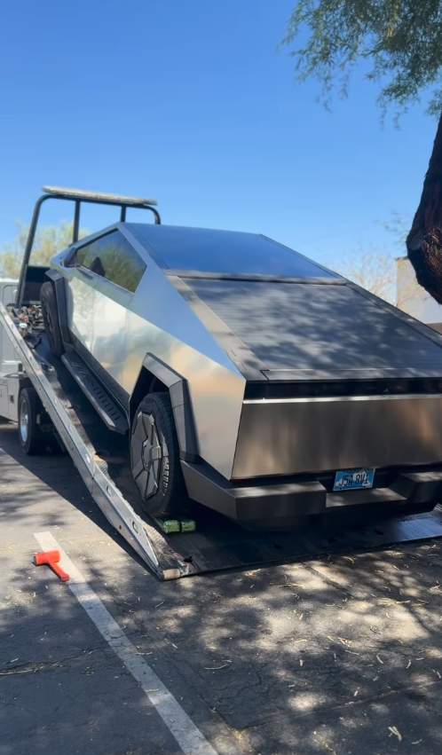
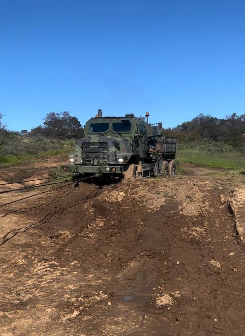
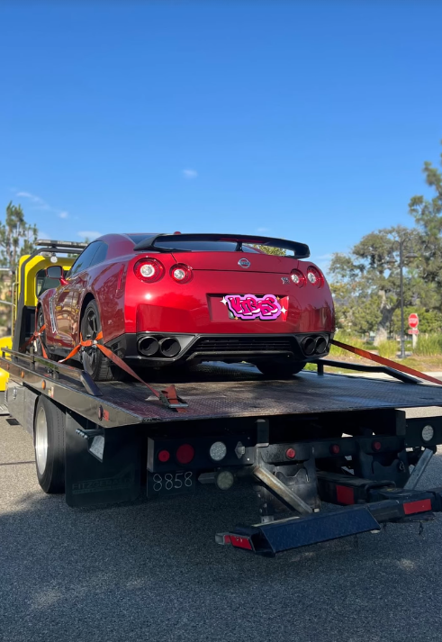
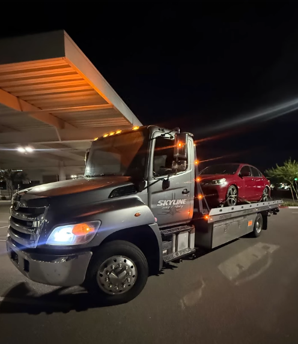
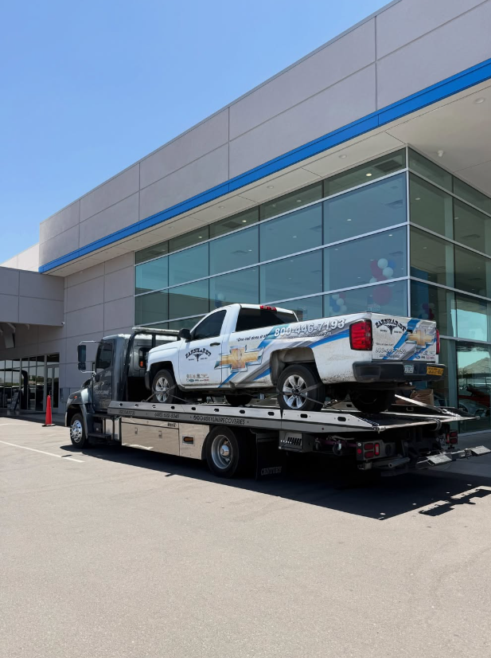
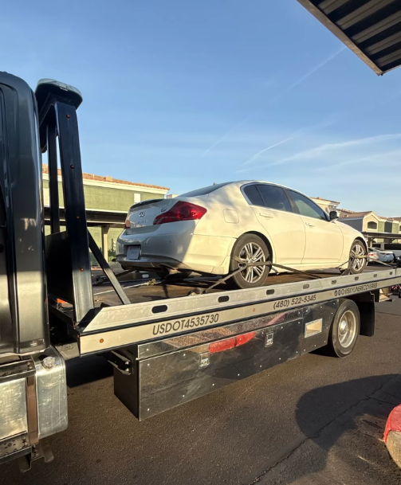

24/7 Towing & Recovery in Mesa, Arizona.
Professional towing, off-road recovery and roadside assistance across Mesa and the East Valley. Careful loading, direct communication and the right equipment for the job.
Towing that looks after the vehicle, not just the destination.
From daily drivers to specialty vehicles and difficult recoveries, Skyline brings the right equipment and a careful approach.
Flatbed towing.
Low-clearance cars, EVs, trucks and everyday vehicles moved with careful loading and professional equipment.
Explore towing →Off-Road Recovery
Winching and recovery when pavement ends.
Tool Box Towing
Careful transport for large mechanic tool boxes.
Electric Vehicle Towing
Flatbed transport with EV clearance in mind.
Roadside Assistance
Fast help for disabled vehicles and common breakdowns.
Vehicle Lockouts
Professional entry when keys are locked inside.
Jump Starts
Battery assistance when your vehicle will not start.
Accident Recovery
Controlled removal after collisions and roadway incidents.



From lowered cars to stuck trucks.
Skyline’s work ranges from careful flatbed transport to off-road recovery. That means the same company can handle the sports car you do not want scraped and the vehicle that needs to be winched out of a rough spot.
Skyline on the road.


Towing across Mesa & the East Valley.
Dedicated local pages make it easier for nearby drivers to find the right towing and roadside service directly from search.